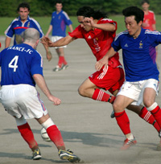
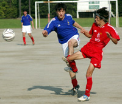

|
The first game of the new TML season, Swiss vs. France, a little nervousness for both teams as there were new players and some old ones missing. The changes in personnel and the lack of practice over the summer meant that it wasn't going to be flowing footy! The Swiss have added Italian, Brazilian, and Cameroonian flair while the French seemed to have added youth (French and Japanese) in midfield. The Swiss tried to play their typical buildup style but the lack of practice meant passes were not connecting and crosses were not being met as a lack of fitness meant midfielders were not getting in the box. The French as well had difficulty linking up with their industrious center forward who was holding up the ball well but few overlapping options in the heat meant everything slowed down.
|  |
|
A new Swiss signing tries to force his way past Taka & Yannick of France FC.
|
The first break in the game occurred about 10 minutes in from what appeared to be a pretty easy ball for the French keeper or defense to clear out after a through ball. It was not to be though as Karl bundled through, the keeper's attempted clearance instead bounced into him and he was able to touch it into an open net from the top of the penalty area. 1-0 to the Swiss.
The second goal came with about 20 minutes gone, there was some nice buildup down the left with Steve centering it into Ian, Ian brought the ball under control inside the box but there were 2 defenders close by. He bobbed and weaved and both players got tackles in but the ball incredibly landed right in front of him. The keeper came out as well but he danced his way around that attempted tackle and was able to shoot into an open net for a 2-0 lead. It wasn't very deserving based on the quality of the chances but both forwards had done very well to score! A third goal for the Swiss came after a free kick was floated in from the right hand side. Kirk, the only 195 cm player on the pitch, did an amazing amount of nothing and watched 2 defenders bump into each other and the keeper come out and miss the ball entirely. The ball proceeded to bounce off Kirk's head into an open net. To be leading 3-0 after 25 minutes was rather impressive considering the quality of the footy on display.
|  |
|
Julien Sepheriades fires in a volley from outside the area to give the French a glimmer of hope.
|
The best footy of the match came immediately afterwards from the French and they were rewarded with a brilliant goal from their young midfielder. Some good buildup on the left led to a cross finding the center forward, who turned away from the slender Swiss defender to find the overlapping midfielder in oceans of space. Instead of driving through to take Peter on 1 on 1 in goal, he unleashed a great volley from about 25 meters and saw it fly into the right hand corner. Really a great goal and it was a bit of a statement to the Swiss that this wasn't going to be that easy! Unfortunately for the French, that was to be the end of scoring for both sides for the rest of the match.
The 2nd half was more entertaining as there were plenty of chances. Sloppy defending was the main cause of the never ending attacking but pretty woeful finishing and some better goal keeping meant that the Swiss ended up with a 3-1 victory. It is good to start off with a victory and top the table for week one at least. Hopefully the quality of everyone's footy will improve as the season progresses.
Capn Kirk
|